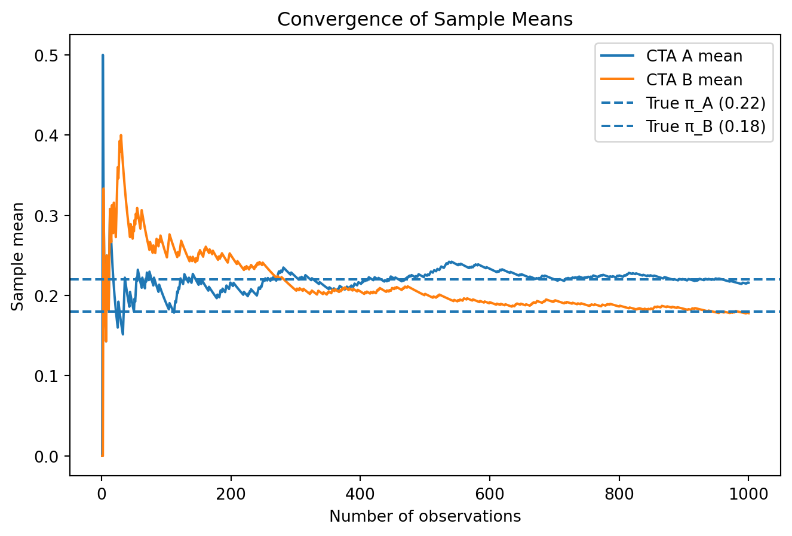

Simulating Key Ideas from Classical Frequentist Statistics
Author
Ben Hsu
Published
April 15, 2026
Introduction
A website has a landing page where visitors can sign up for a newsletter. We are finding out which call to action buttons (CTA) leads to more sign-ups. CTA A says “Sign up for our newsletter here!” and CTA B says “Stay up to date by signing up!”
To compare them, we run an A/B test. Visitors are randomly assigned to see either CTA A or CTA B. Then we compare the sign-up rates in the two groups. Because the assignment is random, any difference in sign-up rates can be attributed to the CTA itself rather than to differences between visitors.
The A/B Test as a Statistical Problem
Each visitor’s outcome is binary: they either sign up (1) or do not (0). In statistics, this is modeled as a Bernoulli random variable.
Because the CTA may influence behavior, we allow different probabilities for each group: \(\pi_A\) for CTA A and \(\pi_B\) for CTA B.
We then compare these two probabilities to see if there is a meaningful difference between them. If the difference is statistically significant, we can conclude that one CTA performs better than the other.
Simulating Data
In practice, we do not know the true values of \(\pi_A\) and \(\pi_B\). We only observe sample data and use it to estimate them.
For this exercise, we will simulate data using Python and NumPy. This is useful because we can set the true probabilities ourselves and then examine how our estimator behaves when the true difference is known.
Suppose \(\pi_A = 0.22\) and \(\pi_B = 0.18\), so the true difference is:
\[
\theta = \pi_A - \pi_B = 0.22 - 0.18 = 0.04
\]
We now simulate 1,000 visitors for each group. Each visitor either signs up (1) or does not sign up (0), so each outcome is generated from a Bernoulli distribution.
import numpy as np# Set seed for reproducibilitynp.random.seed(42)# True probabilitiespi_A =0.22pi_B =0.18# Number of visitors in each groupn_obs =1000# Simulate sign-up outcomesA = np.random.binomial(1, pi_A, n_obs)B = np.random.binomial(1, pi_B, n_obs)A.mean(), B.mean()
(0.216, 0.178)
The Law of Large Numbers
The Law of Large Numbers states that as the sample size increases, the sample mean converges to the true population mean. In this A/B test, this means the estimated sign-up rates for CTA A and CTA B will become more stable as we include more observations.
We first show how the sample means for each group evolve as the sample size increases.
import numpy as npimport matplotlib.pyplot as plt# Running means for A and Brunning_mean_A = np.cumsum(A) / np.arange(1, n_obs +1)running_mean_B = np.cumsum(B) / np.arange(1, n_obs +1)# Plotplt.figure(figsize=(8, 5))plt.plot(np.arange(1, n_obs +1), running_mean_A, label='CTA A mean')plt.plot(np.arange(1, n_obs +1), running_mean_B, label='CTA B mean')plt.axhline(y=pi_A, linestyle='--', label='True π_A (0.22)')plt.axhline(y=pi_B, linestyle='--', label='True π_B (0.18)')plt.xlabel('Number of observations')plt.ylabel('Sample mean')plt.title('Convergence of Sample Means')plt.legend()plt.show()

At the beginning, the sample means fluctuate because the number of observations is small. As more data are included, both lines stabilize and approach their true values.
Next, we look at the difference between the two groups.
# Difference between A and Bdiff = A - B# Running mean of the differencetheta_hat_obs = A.mean() - B.mean()# Bootstrap settingsn_boot =1000boot_theta = []# Bootstrap resamplingfor _ inrange(n_boot): A_star = np.random.choice(A, size=len(A), replace=True) B_star = np.random.choice(B, size=len(B), replace=True) boot_theta.append(A_star.mean() - B_star.mean())boot_theta = np.array(boot_theta)# Bootstrap standard errorboot_se = boot_theta.std(ddof=1)# Analytical standard errorpi_hat_A = A.mean()pi_hat_B = B.mean()n_A =len(A)n_B =len(B)analytical_se = np.sqrt( (pi_hat_A * (1- pi_hat_A) / n_A) + (pi_hat_B * (1- pi_hat_B) / n_B))# 95% confidence interval using bootstrap standard errorci_lower = theta_hat_obs -1.96* boot_seci_upper = theta_hat_obs +1.96* boot_seprint(f"Estimated difference (theta_hat): {theta_hat_obs:.4f}")print(f"Bootstrap SE: {boot_se:.4f}")print(f"Analytical SE: {analytical_se:.4f}")print(f"95% CI: ({ci_lower:.4f}, {ci_upper:.4f})")
The graph also indicates that the estimate stabilizes before reaching 1,000 observations. Using a 95% margin of error,
\[
1.96 \cdot \sqrt{\frac{0.3192}{n}} \le 0.04
\]
gives
\[
n \approx 767
\]
This suggests that fewer than 1,000 observations are sufficient, with around 767 providing a statistically justified level of precision.
Bootstrap Standard Errors
So far, we have focused on estimating the difference in sign-up rates between CTA A and CTA B. The next question is how precise that estimate is. In addition to reporting a point estimate, we also want to measure its uncertainty.
One useful method is bootstrapping. The bootstrap is a resampling method that estimates the variability of a statistic without relying only on a formula. The idea is simple: we repeatedly resample from the observed data with replacement, compute the statistic each time, and then use the standard deviation of those resampled statistics as the estimated standard error.
In this simulation, the estimated difference is about 0.0380. The bootstrapped standard error is about 0.0177, while the analytical standard error is about 0.0178. These two values are very close, which suggests that the bootstrap is giving a reasonable estimate of the variability of our estimator.
Using the bootstrapped standard error, the 95% confidence interval for \(\theta\) is approximately:
\[
(0.0034,\ 0.0726)
\]
This means the true difference in sign-up rates is likely to fall within this interval. Because the interval is entirely above 0, it suggests that CTA A performs better than CTA B at the 95% confidence level.
The Central Limit Theorem
The Central Limit Theorem states that as the sample size increases, the sampling distribution of the sample mean becomes approximately Normal, even if the original data are not normally distributed. In this A/B test, each individual outcome is Bernoulli (0 or 1), but the estimator \(\hat{\theta} = \bar{X}_A - \bar{X}_B\) will still become approximately bell-shaped when the sample size is large enough.
To illustrate this, we repeatedly simulate samples from CTA A and CTA B, compute \(\hat{\theta}\) each time, and examine the distribution of those estimates for different sample sizes.
The histograms show the sampling distribution of \(\hat{\theta}\) for different sample sizes. When the sample size is small, the distribution looks more irregular and dispersed. As the sample size increases, the distribution becomes smoother, more symmetric, and more bell-shaped.
This illustrates the Central Limit Theorem in action. Even though the original data are binary, the distribution of the estimator \(\hat{\theta}\) becomes approximately Normal when the sample size is large enough.
Hypothesis Testing
Since the Central Limit Theorem shows that \(\hat{\theta}\) is approximately Normal for large samples, we can use this result to perform a hypothesis test.
We test: - \(H_0: \theta = 0\) (no difference between CTAs) - \(H_1: \theta \neq 0\) (there is a difference)
To do this, we standardize our estimate using the standard error:
\[
z = \frac{\hat{\theta} - 0}{SE(\hat{\theta})}
\]
Under \(H_0\), \(\hat{\theta}\) is approximately Normal with mean 0, so the test statistic \(z\) follows an approximate standard Normal distribution. This allows us to compute a p-value.
In this case, the p-value is small, which suggests strong evidence against \(H_0\). Therefore, we reject the null hypothesis and conclude that the sign-up rates differ between the two CTAs.
Although this is sometimes referred to as a t-test, in this setting it is closer to a z-test because we rely on the Central Limit Theorem rather than an exact t-distribution. For large samples, the difference is negligible.
The T-Test as a Regression
The two-sample test can also be written as a simple linear regression. This is useful because it shows that hypothesis testing can be done using standard regression tools, and the same framework extends to more complex settings.
We combine the data into one dataset with: - \(Y_i\): outcome (1 = sign-up, 0 = no sign-up) - \(D_i\): indicator (1 = CTA A, 0 = CTA B)
We then estimate:
\[
Y_i = \beta_0 + \beta_1 D_i + \varepsilon_i
\]
To connect this back to the original A/B test:
When \(D_i = 0\) (CTA B), the equation becomes: \[
Y_i = \beta_0
\] so \(\beta_0\) represents the average outcome for CTA B, i.e., \(\pi_B\).
When \(D_i = 1\) (CTA A), the equation becomes: \[
Y_i = \beta_0 + \beta_1
\] so \(\beta_0 + \beta_1\) represents the average outcome for CTA A, i.e., \(\pi_A\).
Therefore, \(\beta_1 = \pi_A - \pi_B = \theta\), which is exactly the difference in sign-up rates.
import numpy as npimport statsmodels.api as sm# Combine dataY = np.concatenate([A, B])D = np.concatenate([np.ones(len(A)), np.zeros(len(B))])# Add interceptX = sm.add_constant(D)# Fit regressionmodel = sm.OLS(Y, X).fit()print(model.summary())
To connect the regression results back to the original A/B test:
The intercept (const = 0.1780) corresponds to the average outcome when \(D_i = 0\), i.e., the mean sign-up rate for CTA B. This matches \(\hat{\pi}_B = B.mean() \approx 0.1780\).
The coefficient on \(D_i\) (x1 = 0.0380) represents the difference between CTA A and CTA B. This matches our earlier estimate: \[
\hat{\theta} = \bar{X}_A - \bar{X}_B \approx 0.0380
\]
Therefore, the predicted value for CTA A is: \[
\beta_0 + \beta_1 = 0.1780 + 0.0380 = 0.2160
\] which matches \(\hat{\pi}_A = A.mean() \approx 0.2160\).
The standard error for \(\hat{\beta}_1\) (about 0.018) is very close to the analytical standard error computed earlier (about 0.0178).
The t-statistic (≈ 2.14) and p-value (≈ 0.033) also match the hypothesis test results from the previous section.
This confirms that the regression approach produces the same estimate and inference as the two-sample test. This equivalence matters because regression provides a more flexible framework. In more complex settings, we can easily add additional variables or controls while using the same approach to estimate treatment effects.
The Problem with Peeking
Peeking means checking the results of an experiment before the planned sample size has been reached. In this example, instead of waiting until 1,000 visitors have been assigned to each CTA group, we test after every 100 visitors per group.
This is problematic in classical frequentist statistics because each hypothesis test has some chance of producing a false positive. If we run only one test at the 5% significance level, then under the null hypothesis there is a 5% chance of incorrectly rejecting it. However, if we run the test repeatedly as the data accumulates, we create multiple chances to make that mistake.
The main issue is that the overall false positive rate is no longer 5%. Even if there is actually no difference between CTA A and CTA B, repeated testing makes it more likely that one of the p-values will fall below 0.05 just by chance. If we stop the experiment as soon as that happens, we may incorrectly declare a winner.
To clarify, each p-value measures how likely the observed difference is assuming the two CTAs are identical (i.e., under the null hypothesis). A small p-value (below 0.05) indicates that the observed result would be unlikely under no difference, and is therefore considered evidence against the null.
To show this, we simulate a world in which the null hypothesis is true:
\[
\pi_A = \pi_B = 0.20
\]
so the true difference is
\[
\theta = \pi_A - \pi_B = 0
\]
We then follow these steps:
Simulate one experiment with 1,000 visitors in group A and 1,000 visitors in group B.
After every 100 observations per group, run the same z-test used earlier.
Check whether any of the 10 p-values is below 0.05.
Repeat the full experiment 10,000 times.
Compute the fraction of experiments in which at least one peek was significant.
That fraction is the empirical false positive rate under peeking.
To better understand what “peeking” looks like, we first examine a single simulated experiment and print the test results after every 100 observations.
# One example experiment (for illustration)np.random.seed(42)A_example = np.random.binomial(1, 0.20, 1000)B_example = np.random.binomial(1, 0.20, 1000)print("Peeking results for one experiment:\n")for n_peek inrange(100, 1001, 100): A_sub = A_example[:n_peek] B_sub = B_example[:n_peek] theta_hat = A_sub.mean() - B_sub.mean() pi_hat_A = A_sub.mean() pi_hat_B = B_sub.mean() se = np.sqrt( (pi_hat_A * (1- pi_hat_A) / n_peek) + (pi_hat_B * (1- pi_hat_B) / n_peek) ) z = theta_hat / se if se >0else0 p_value =2* (1- norm.cdf(abs(z)))print(f"n = {n_peek:4d} | theta_hat = {theta_hat:.4f} | z = {z:.2f} | p = {p_value:.4f}")
Peeking results for one experiment:
n = 100 | theta_hat = -0.0800 | z = -1.37 | p = 0.1701
n = 200 | theta_hat = -0.0600 | z = -1.41 | p = 0.1590
n = 300 | theta_hat = -0.0133 | z = -0.40 | p = 0.6918
n = 400 | theta_hat = -0.0225 | z = -0.78 | p = 0.4375
n = 500 | theta_hat = -0.0120 | z = -0.46 | p = 0.6458
n = 600 | theta_hat = 0.0033 | z = 0.14 | p = 0.8889
n = 700 | theta_hat = -0.0129 | z = -0.59 | p = 0.5562
n = 800 | theta_hat = -0.0038 | z = -0.18 | p = 0.8537
n = 900 | theta_hat = -0.0067 | z = -0.35 | p = 0.7269
n = 1000 | theta_hat = -0.0050 | z = -0.28 | p = 0.7804
In this example, all p-values are greater than 0.05, so we do not reject the null hypothesis at any point. However, this is just one realization of the experiment. The p-values fluctuate as more data are added, and in some experiments, one of these p-values may fall below 0.05 purely by chance.
To quantify how often this happens, we repeat the entire experiment 10,000 times.
Empirical false positive rate with peeking: 0.1864
A single hypothesis test at the 5% significance level should produce a false positive only about 5% of the time when the null hypothesis is true. However, this simulation shows that when we peek at the data repeatedly, the false positive rate increases to about 18.6%.
This happens because each additional test creates another opportunity to observe a small p-value purely by random variation. Even though each individual test uses the same 0.05 cutoff, the probability that at least one test becomes significant increases as we repeat the test multiple times.
In practice, this means that repeatedly checking an A/B test and stopping as soon as one result looks significant can lead to misleading conclusions. A company may think one CTA is better when in fact the observed difference was only due to random chance.